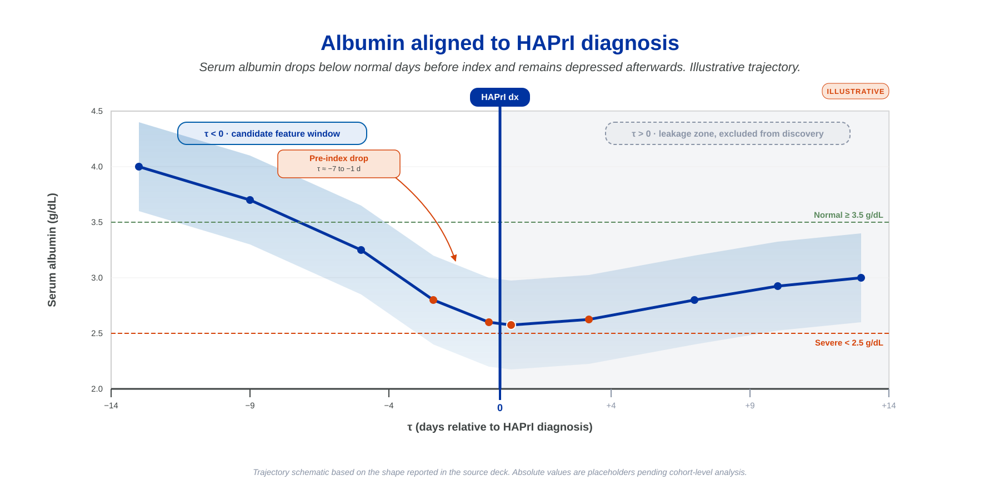
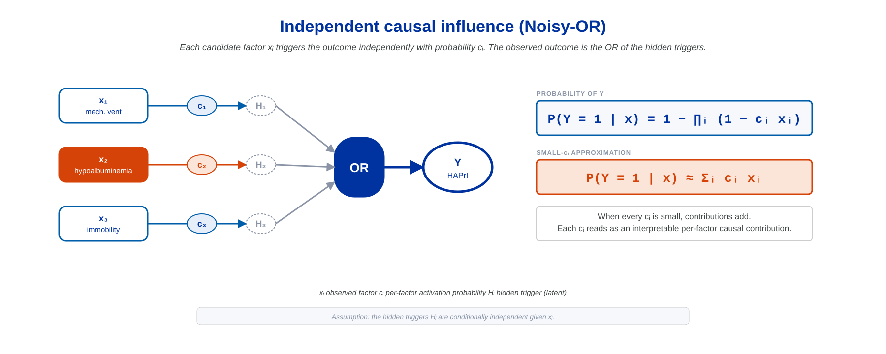
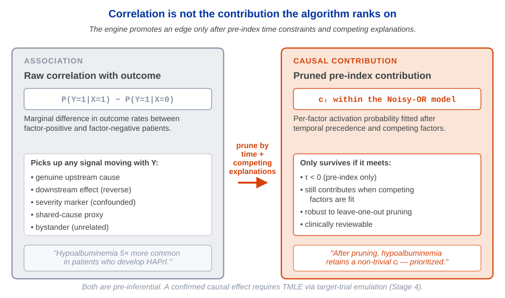
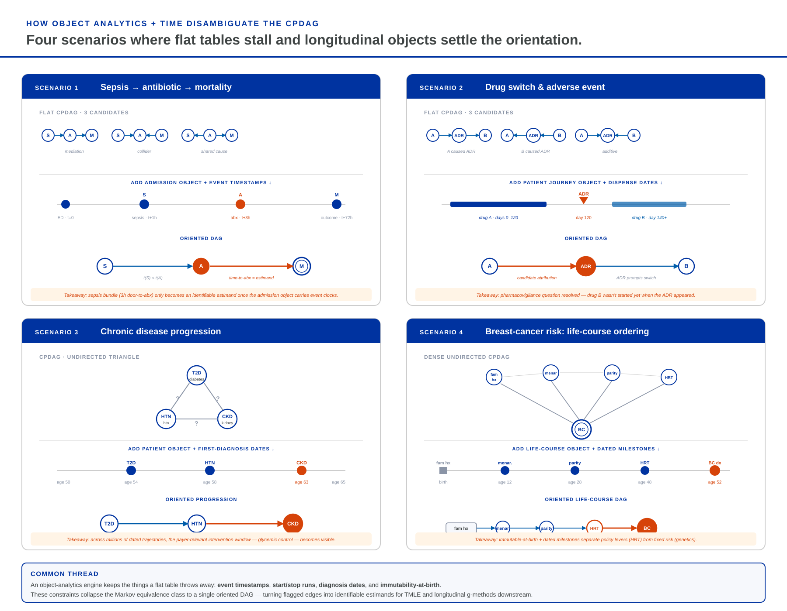

<!DOCTYPE html>
<html lang="en">
<head>
  <meta charset="UTF-8" />
  <meta name="viewport" content="width=device-width, initial-scale=1.0" />
  <title>Object-Centric Causal Discovery in MIMIC-IV | ISPOR 2026 MSR72</title>
  <meta name="description" content="Companion dashboard for ISPOR 2026 poster MSR72. Object-centric causal discovery prioritizes hypoalbuminemia as a candidate upstream driver of hospital-acquired pressure injury in MIMIC-IV, pending confirmatory target-trial emulation and TMLE." />
  <link href="https://fonts.googleapis.com/css2?family=Playfair+Display:wght@400;600;700&family=Source+Sans+3:wght@300;400;500;600;700&display=swap" rel="stylesheet" />
  <link rel="stylesheet" href="https://cdn.jsdelivr.net/npm/katex@0.16.11/dist/katex.min.css" />
  <style>
    * { margin: 0; padding: 0; box-sizing: border-box; }
    .katex { font-size: 1.05em; }
    html { scroll-behavior: smooth; }
    img.figure-asset { max-width: 100%; height: auto; display: block; margin: 0 auto; }
    a.ref-link { color: #005DAA; text-decoration: none; border-bottom: 1px dashed rgba(0,93,170,0.4); }
    a.ref-link:hover { border-bottom-style: solid; }
  </style>
</head>
<body>
  <div id="root"></div>

  <script crossorigin="anonymous" src="https://unpkg.com/react@18/umd/react.production.min.js"></script>
  <script crossorigin="anonymous" src="https://unpkg.com/react-dom@18/umd/react-dom.production.min.js"></script>
  <script crossorigin="anonymous" src="https://unpkg.com/prop-types@15/prop-types.min.js"></script>
  <script crossorigin="anonymous" src="https://unpkg.com/recharts@2.15.0/umd/Recharts.js"></script>
  <script crossorigin="anonymous" src="https://cdn.jsdelivr.net/npm/katex@0.16.11/dist/katex.min.js"></script>
  <script crossorigin="anonymous" src="https://unpkg.com/@babel/standalone/babel.min.js"></script>

  <script type="text/babel">
const { useState, useMemo, useEffect, useRef } = React;
const {
  LineChart, Line, XAxis, YAxis, CartesianGrid, Tooltip, Label,
  ResponsiveContainer, ReferenceArea, ReferenceLine, Legend
} = Recharts;

/* ─── Color Palette (Boise State) ───────────────────────────────────────── */
const COLORS = {
  navy:    "#0033A0",
  orange:  "#D64309",
  blue:    "#005DAA",
  purple:  "#783C96",
  ink:     "#3F4444",
  gray:    "#CDCDCD",
  bg:      "#fffdf9",
  surface: "#f6f8fc",
  text:    "#1a202c",
  subtle:  "#4a5568",
  muted:   "#8a94a6",
  border:  "#d8dde5",
  cardBg:  "rgba(255,255,255,0.85)",
};

function hexAlpha(hex, a) {
  const h = hex.replace("#", "");
  const r = parseInt(h.slice(0,2), 16), g = parseInt(h.slice(2,4), 16), b = parseInt(h.slice(4,6), 16);
  return `rgba(${r},${g},${b},${a})`;
}

/* ─── Shared components ─────────────────────────────────────────────────── */

const Tex = ({ math, display }) => {
  const ref = useRef(null);
  useEffect(() => {
    if (ref.current && typeof katex !== 'undefined') {
      katex.render(String(math), ref.current, { throwOnError: false, displayMode: !!display });
    }
  }, [math, display]);
  return display
    ? <div ref={ref} style={{ margin: '4px 0', overflowX: 'auto', textAlign: 'center' }} />
    : <span ref={ref} />;
};

const MathBlock = ({ children }) => (
  <div style={{ padding: "20px 24px", background: hexAlpha(COLORS.navy, 0.04), borderLeft: `3px solid ${hexAlpha(COLORS.navy, 0.18)}`, borderRadius: "0 6px 6px 0", margin: "22px 0", overflowX: "auto" }}>
    {children}
  </div>
);

const SectionNav = ({ sections, active, onSelect }) => (
  <nav style={{ display: "flex", gap: "2px", padding: "6px", background: hexAlpha(COLORS.navy, 0.05), borderRadius: "10px", marginBottom: "32px", flexWrap: "wrap" }}>
    {sections.map((s, i) => (
      <button key={i} onClick={() => onSelect(i)} style={{
        flex: "1 1 auto", padding: "10px 14px", border: "none", borderRadius: "8px",
        background: active === i ? COLORS.navy : "transparent",
        color: active === i ? "#f7fafc" : COLORS.subtle,
        fontFamily: "'Source Sans 3', sans-serif", fontSize: "1rem",
        fontWeight: active === i ? 600 : 500, cursor: "pointer",
        transition: "all 0.2s", letterSpacing: "0.02em", whiteSpace: "nowrap"
      }}>
        <span style={{ opacity: 0.5, marginRight: 6 }}>{i + 1}</span>{s}
      </button>
    ))}
  </nav>
);

const InsightBox = ({ children, label = "Note", color = COLORS.blue }) => (
  <div style={{
    marginTop: 32, padding: "20px 26px",
    background: `linear-gradient(135deg, ${hexAlpha(color, 0.08)}, ${hexAlpha(color, 0.02)})`,
    borderLeft: `4px solid ${color}`, borderRadius: "0 10px 10px 0",
    border: `1px solid ${COLORS.border}`, borderLeftWidth: 4, borderLeftColor: color
  }}>
    <h4 style={{ margin: "0 0 6px", color, fontSize: "1rem", fontFamily: "'Source Sans 3', sans-serif", fontWeight: 700, letterSpacing: "0.05em", textTransform: "uppercase" }}>{label}</h4>
    <div style={{ margin: 0, color: COLORS.subtle, lineHeight: 1.7, fontSize: "1.05rem", fontFamily: "'Source Sans 3', sans-serif" }}>{children}</div>
  </div>
);

const GlassCard = ({ children, style }) => (
  <div style={{
    background: COLORS.cardBg, borderRadius: 12, padding: "28px 32px",
    border: `1px solid ${COLORS.border}`,
    backdropFilter: "blur(10px)", boxShadow: "0 2px 12px rgba(0,0,0,0.04)",
    ...style
  }}>{children}</div>
);

const PrevNextNav = ({ active, total, onSelect }) => (
  <div style={{ display: "flex", justifyContent: "space-between", marginTop: 32, paddingTop: 20, borderTop: `1px solid ${COLORS.border}` }}>
    <button disabled={active === 0} onClick={() => onSelect(active - 1)} style={{
      padding: "10px 20px", borderRadius: 8, border: `1px solid ${COLORS.border}`,
      background: active === 0 ? "#f7f7f7" : "white", color: active === 0 ? COLORS.muted : COLORS.text,
      fontFamily: "'Source Sans 3', sans-serif", fontSize: "1rem", fontWeight: 600,
      cursor: active === 0 ? "default" : "pointer", transition: "all 0.2s"
    }}>&#8592; Previous</button>
    {active < total - 1 && (
      <button onClick={() => onSelect(active + 1)} style={{
        padding: "10px 20px", borderRadius: 8, border: `1px solid ${COLORS.border}`,
        background: "white", color: COLORS.text,
        fontFamily: "'Source Sans 3', sans-serif", fontSize: "1rem", fontWeight: 600,
        cursor: "pointer", transition: "all 0.2s"
      }}>Next &#8594;</button>
    )}
  </div>
);

const SectionTitle = ({ children, kicker }) => (
  <>
    {kicker && <p style={{ fontFamily: "'Source Sans 3', sans-serif", fontSize: "1rem", letterSpacing: "0.14em", textTransform: "uppercase", color: COLORS.muted, marginBottom: 6 }}>{kicker}</p>}
    <h2 style={{ fontFamily: "'Playfair Display', serif", fontSize: "1.7rem", fontWeight: 700, color: COLORS.text, marginBottom: 16, lineHeight: 1.2 }}>{children}</h2>
  </>
);

const Para = ({ children }) => (
  <p style={{ fontFamily: "'Source Sans 3', sans-serif", fontSize: "1.08rem", lineHeight: 1.75, color: COLORS.subtle, marginBottom: 18 }}>{children}</p>
);

const MetricCard = ({ label, value, sub, color }) => (
  <div style={{
    flex: 1, background: "white", border: `1px solid ${COLORS.border}`,
    borderTop: `3px solid ${color}`, borderRadius: 10, padding: "14px 16px",
    textAlign: "center", minWidth: 120
  }}>
    <div style={{ fontFamily: "'Playfair Display', serif", fontSize: "1.85rem", fontWeight: 700, color, lineHeight: 1.1 }}>{value}</div>
    <div style={{ fontFamily: "'Source Sans 3', sans-serif", fontSize: "1rem", fontWeight: 600, color: COLORS.text, marginTop: 6 }}>{label}</div>
    {sub && <div style={{ fontFamily: "'Source Sans 3', sans-serif", fontSize: "1rem", color: COLORS.muted, marginTop: 2 }}>{sub}</div>}
  </div>
);

const IllustrativeBadge = ({ style }) => (
  <span style={{
    display: "inline-block", padding: "3px 10px",
    background: hexAlpha(COLORS.orange, 0.12), color: COLORS.orange,
    borderRadius: 12, fontSize: "1rem", fontWeight: 700,
    letterSpacing: "0.1em", textTransform: "uppercase",
    fontFamily: "'Source Sans 3', sans-serif",
    ...style
  }}>Illustrative</span>
);

const CardHeader = ({ title, badge }) => (
  <div style={{ display: "flex", justifyContent: "space-between", alignItems: "center", marginBottom: 14, gap: 12, flexWrap: "wrap" }}>
    <h4 style={{
      fontFamily: "'Source Sans 3', sans-serif", fontSize: "1rem",
      letterSpacing: "0.12em", textTransform: "uppercase",
      color: COLORS.muted, fontWeight: 700
    }}>{title}</h4>
    {badge}
  </div>
);

/* ═══════════════════════════════════════════════════════════════════════════
   TAB 1 — THE STALL  (why flat-table discovery returns an equivalence class)
   ═══════════════════════════════════════════════════════════════════════════ */

const Tab_Stall = () => {
  const [timeRevealed, setTimeRevealed] = useState(false);

  const withoutTime = {
    label: "No temporal ordering",
    color: COLORS.muted,
    heading: "Three DAGs, one CPDAG.",
    text: "X → Y → Z, X ← Y → Z, and X ← Y ← Z all imply the same conditional-independence pattern. With only cross-sectional dependencies, a discovery algorithm (PC, GES, LiNGAM, NOTEARS) returns the equivalence class, not a single oriented graph."
  };

  const withTime = {
    label: "Temporal precedence added",
    color: COLORS.navy,
    heading: "X happened before Y, and Y before Z.",
    text: "Once time is in the data, only the first DAG (X → Y → Z) is consistent with the observed order. The equivalence class collapses to a single oriented DAG, and the identifying formula for P(Y | do(X)) applies."
  };

  const state = timeRevealed ? withTime : withoutTime;

  return (
    <div>
      <SectionTitle kicker="The stall">
        Classic discovery on a flat table returns an equivalence class, not an oriented DAG.
      </SectionTitle>
      <Para>
        PC, GES, LiNGAM, and NOTEARS operate on a flat rectangular table of cross-sectional dependencies. They
        recover the <em>Markov equivalence class</em> &mdash; the set of DAGs consistent with the conditional-independence
        pattern in the data &mdash; and return the CPDAG (a partially-directed graph) as their output. Without
        temporal information they cannot orient many of the edges.
      </Para>

      <GlassCard style={{ marginTop: 28 }}>
        <CardHeader title="The classic equivalence-class problem" />
        
      </GlassCard>

      <GlassCard style={{ marginTop: 32 }}>
        <CardHeader title="What time adds" />
        <div style={{ display: "flex", alignItems: "center", gap: 10, marginBottom: 10 }}>
          <span style={{ fontFamily: "'Source Sans 3', sans-serif", fontSize: "1rem", fontWeight: 600, color: COLORS.text }}>Reveal temporal order</span>
          <button onClick={() => setTimeRevealed(!timeRevealed)} style={{
            padding: "8px 20px", borderRadius: 20,
            border: `1.5px solid ${state.color}`,
            background: timeRevealed ? state.color : "white",
            color: timeRevealed ? "white" : state.color,
            fontFamily: "'Source Sans 3', sans-serif", fontSize: "1rem",
            fontWeight: 600, cursor: "pointer", transition: "all 0.2s"
          }}>{timeRevealed ? "With time" : "No time"}</button>
        </div>

        <div style={{
          marginTop: 18, padding: "18px 22px",
          background: hexAlpha(state.color, 0.06),
          borderLeft: `4px solid ${state.color}`,
          borderRadius: "0 8px 8px 0"
        }}>
          <h4 style={{ fontFamily: "'Playfair Display', serif", fontSize: "1.1rem", fontWeight: 700, color: state.color, marginBottom: 6 }}>
            {state.heading}
          </h4>
          <p style={{ fontFamily: "'Source Sans 3', sans-serif", fontSize: "1.05rem", color: COLORS.ink, lineHeight: 1.65, margin: 0 }}>
            {state.text}
          </p>
        </div>

        <MathBlock>
          <Tex
            display
            math={"P(Y \\mid \\mathrm{do}(X)) \\;=\\; \\sum_{z} P(Y \\mid X, Z=z)\\, P(Z=z)"}
          />
        </MathBlock>
        <p style={{ fontFamily: "'Source Sans 3', sans-serif", fontSize: "1rem", color: COLORS.muted, textAlign: "center", fontStyle: "italic", marginTop: -4 }}>
          Identifiable only once the DAG is oriented. Object-centric discovery uses the EHR&rsquo;s native temporal structure to do exactly that.
        </p>
      </GlassCard>

      <InsightBox label="Observe" color={COLORS.navy}>
        Object-centric causal discovery doesn&rsquo;t replace PC / GES / LiNGAM &mdash; it supplies the constraint
        (temporal precedence, relational structure) that lets an orientation rule fire. The search is over the
        same space of DAGs; what changes is which edges can be oriented from the data alone.
      </InsightBox>
    </div>
  );
};

/* ═══════════════════════════════════════════════════════════════════════════
   TAB 2 — THE RESHAPE  (object representation + relative-time guardrail)
   ═══════════════════════════════════════════════════════════════════════════ */

const Tab_Reshape = () => {
  return (
    <div>
      <SectionTitle kicker="The reshape">
        Don&rsquo;t flatten the data. Let time and relational structure orient the causal graph.
      </SectionTitle>
      <Para>
        Classic discovery assumes rectangular data: one row per patient, one column per variable. That
        flattening throws away the temporal ordering of medications, labs, procedures, and outcomes &mdash;
        the very structure a causal graph is supposed to respect. Object-centric methods keep the
        relational structure intact and search for dependencies in place.
      </Para>

      <GlassCard style={{ marginTop: 28 }}>
        <CardHeader title="Flat table vs. patient object — the HAPrI case" />
        
      </GlassCard>

      <div style={{ display: "grid", gridTemplateColumns: "1fr 1fr", gap: 16, marginTop: 24 }}>
        <GlassCard>
          <CardHeader title="Flat representation" />
          <p style={{ fontFamily: "'Source Sans 3', sans-serif", fontSize: "1.05rem", color: COLORS.ink, lineHeight: 1.6, marginBottom: 10 }}>
            One row per patient. Lab values, medications, and outcomes are columns. Temporal ordering is not available to the discovery algorithm.
          </p>
          <MathBlock>
            <Tex display math={"P(\\text{HAPrI} \\mid \\text{pa}(\\text{HAPrI}))"} />
          </MathBlock>
          <p style={{ fontFamily: "'Source Sans 3', sans-serif", fontSize: "1rem", color: COLORS.muted, fontStyle: "italic" }}>
            Parents must be inferred from conditional independencies alone.
          </p>
        </GlassCard>

        <GlassCard>
          <CardHeader title="Object-centric representation" />
          <p style={{ fontFamily: "'Source Sans 3', sans-serif", fontSize: "1.05rem", color: COLORS.ink, lineHeight: 1.6, marginBottom: 10 }}>
            Each admission is an object; procedures, medications, and labs are timestamped sub-objects. The search operates on this graph directly.
          </p>
          <MathBlock>
            <Tex display math={"P(\\text{HAPrI} \\mid \\text{pa}_{\\,\\tau}(\\text{HAPrI}))"} />
          </MathBlock>
          <p style={{ fontFamily: "'Source Sans 3', sans-serif", fontSize: "1rem", color: COLORS.muted, fontStyle: "italic" }}>
            Parents are constrained by temporal precedence &tau; &mdash; only earlier objects qualify.
          </p>
        </GlassCard>
      </div>

      <InsightBox label="Relative-time guardrail" color={COLORS.navy}>
        Candidate features are built only from the pre-index window&nbsp;
        <Tex math={"\\tau < 0"} />&nbsp;; post-index information is excluded. That is
        both the causal-orientation constraint (time cannot run backwards) and a target-leakage guardrail.
      </InsightBox>

      <InsightBox label="Takeaway" color={COLORS.orange}>
        The reshape is where the orientation problem is solved. Once time and relational structure are
        preserved, what looked like an equivalence class becomes an oriented graph &mdash; and a
        candidate edge has somewhere to land downstream.
      </InsightBox>
    </div>
  );
};

/* ═══════════════════════════════════════════════════════════════════════════
   TAB 3 — THE FINDING  (HAPrI · hypoalbuminemia · albumin trajectory · DAG)
   ═══════════════════════════════════════════════════════════════════════════ */

const Tab_Finding = () => {
  const [reading, setReading] = useState("upstream");

  const readings = {
    upstream:   { label: "Upstream driver",  color: COLORS.orange, text: "Low albumin impairs capillary integrity, wound healing, and tissue oxygenation, pushing an at-risk patient into injury. This is the hypothesis the algorithm prioritized." },
    confound:   { label: "Confounded",       color: COLORS.blue,   text: "Critical illness drives both hypoalbuminemia and HAPrI. The association looks causal but is the shadow of an unmeasured common cause." },
    reverse:    { label: "Reverse causation", color: COLORS.muted,  text: "Incipient tissue injury triggers a catabolic response that lowers albumin. The arrow runs the other way." },
  };

  return (
    <div>
      <SectionTitle kicker="The finding — HAPrI case study">
        Hypoalbuminemia was prioritized as a candidate upstream driver of hospital-acquired pressure injury.
      </SectionTitle>
      <Para>
        Running object-centric causal discovery on MIMIC-IV v3.1 adult ICU admissions, the algorithm
        prioritized <strong>hypoalbuminemia</strong> as a candidate upstream node in the graph for HAPrI.
        Known risk factors &mdash; mechanical ventilation, immobility, hemodynamic instability, moisture
        exposure, yeast colonization &mdash; were <strong>rediscovered</strong> without any feature engineering.
        The finding on albumin is <em>hypothesis-generating</em>, pending clinician review and
        confirmatory target-trial / TMLE analysis.
      </Para>

      <GlassCard style={{ marginTop: 28 }}>
        <CardHeader title="Candidate structure (zoomed subgraph)" />
        <svg viewBox="0 0 720 240" style={{ width: "100%", display: "block", maxHeight: 280 }}>
          <defs>
            <marker id="arrNavySub" markerWidth="6" markerHeight="6" refX="5.5" refY="3" orient="auto">
              <polygon points="0 0, 6 3, 0 6" fill={COLORS.blue} />
            </marker>
            <marker id="arrOrangeSub" markerWidth="7" markerHeight="7" refX="6.5" refY="3.5" orient="auto">
              <polygon points="0 0, 7 3.5, 0 7" fill={COLORS.orange} />
            </marker>
            <marker id="arrGraySub" markerWidth="6" markerHeight="6" refX="5.5" refY="3" orient="auto">
              <polygon points="0 0, 6 3, 0 6" fill={COLORS.muted} />
            </marker>
          </defs>

          {/* Albumin administration (left) */}
          <g>
            <rect x="16" y="94" width="176" height="52" rx="10" fill="#fff" stroke={COLORS.blue} strokeWidth="2.5" />
            <text x="104" y="114" textAnchor="middle" fontFamily="'Source Sans 3', sans-serif" fontSize="15" fontWeight="700" fill={COLORS.navy}>Albumin administration</text>
            <text x="104" y="135" textAnchor="middle" fontFamily="'Source Sans 3', sans-serif" fontSize="13" fill={COLORS.subtle}>timing &middot; dose</text>
          </g>

          {/* Hypoalbuminemia (center, orange) */}
          <g>
            <rect x="262" y="84" width="196" height="72" rx="14" fill={COLORS.orange} stroke={COLORS.orange} strokeWidth="4" />
            <text x="360" y="112" textAnchor="middle" fontFamily="'Source Sans 3', sans-serif" fontSize="17" fontWeight="700" fill="#fff">Hypoalbuminemia</text>
            <text x="360" y="134" textAnchor="middle" fontFamily="'Source Sans 3', sans-serif" fontSize="14" fill="#fff" opacity="0.92">candidate upstream</text>
            <text x="360" y="152" textAnchor="middle" fontFamily="'Source Sans 3', sans-serif" fontSize="13" fill="#fff" opacity="0.85" fontStyle="italic">pending confirmatory TMLE</text>
          </g>

          {/* HAPrI (right, double-ring) */}
          <g>
            <circle cx="620" cy="120" r="60" fill="#fff" stroke={COLORS.navy} strokeWidth="4" />
            <circle cx="620" cy="120" r="48" fill="#fff" stroke={COLORS.navy} strokeWidth="2" />
            <text x="620" y="116" textAnchor="middle" fontFamily="'Source Sans 3', sans-serif" fontSize="20" fontWeight="700" fill={COLORS.navy}>HAPrI</text>
            <text x="620" y="138" textAnchor="middle" fontFamily="'Source Sans 3', sans-serif" fontSize="13" fill={COLORS.subtle}>outcome</text>
          </g>

          {reading === "upstream" && (
            <>
              <line x1="192" y1="120" x2="254" y2="120" stroke={COLORS.blue} strokeWidth="3" markerEnd="url(#arrNavySub)" />
              <line x1="464" y1="120" x2="552" y2="120" stroke={COLORS.orange} strokeWidth="4" markerEnd="url(#arrOrangeSub)" />
            </>
          )}
          {reading === "confound" && (
            <>
              <g>
                <rect x="380" y="10" width="180" height="36" rx="8" fill={hexAlpha(COLORS.blue, 0.08)} stroke={COLORS.blue} strokeWidth="1.5" strokeDasharray="4 3" />
                <text x="470" y="33" textAnchor="middle" fontFamily="'Source Sans 3', sans-serif" fontSize="13" fontWeight="700" fill={COLORS.blue}>Critical illness (unmeasured)</text>
              </g>
              <line x1="430" y1="46" x2="360" y2="82" stroke={COLORS.blue} strokeWidth="2" strokeDasharray="5 3" markerEnd="url(#arrNavySub)" />
              <line x1="510" y1="46" x2="600" y2="70" stroke={COLORS.blue} strokeWidth="2" strokeDasharray="5 3" markerEnd="url(#arrNavySub)" />
              <line x1="192" y1="120" x2="254" y2="120" stroke={COLORS.blue} strokeWidth="3" markerEnd="url(#arrNavySub)" opacity="0.4" />
              <line x1="464" y1="120" x2="556" y2="120" stroke={COLORS.muted} strokeWidth="3" strokeDasharray="6 4" markerEnd="url(#arrGraySub)" opacity="0.6" />
            </>
          )}
          {reading === "reverse" && (
            <>
              <line x1="192" y1="120" x2="254" y2="120" stroke={COLORS.blue} strokeWidth="3" markerEnd="url(#arrNavySub)" opacity="0.5" />
              <line x1="552" y1="120" x2="466" y2="120" stroke={COLORS.muted} strokeWidth="3" markerEnd="url(#arrGraySub)" />
            </>
          )}
        </svg>

        <div style={{ display: "flex", gap: 8, marginTop: 16, flexWrap: "wrap", justifyContent: "center" }}>
          {Object.entries(readings).map(([key, r]) => (
            <button key={key} onClick={() => setReading(key)} style={{
              padding: "8px 16px", borderRadius: 20,
              border: `1.5px solid ${reading === key ? r.color : COLORS.border}`,
              background: reading === key ? r.color : "white",
              color: reading === key ? "white" : COLORS.text,
              fontFamily: "'Source Sans 3', sans-serif", fontSize: "1rem",
              fontWeight: 600, cursor: "pointer", transition: "all 0.15s"
            }}>{r.label}</button>
          ))}
        </div>

        <div style={{ marginTop: 14, padding: "12px 16px", background: hexAlpha(readings[reading].color, 0.06), borderRadius: 8, borderLeft: `3px solid ${readings[reading].color}` }}>
          <p style={{ fontFamily: "'Source Sans 3', sans-serif", fontSize: "1.05rem", color: COLORS.ink, lineHeight: 1.6, margin: 0 }}>
            <strong style={{ color: readings[reading].color }}>{readings[reading].label}:</strong> {readings[reading].text}
          </p>
        </div>
      </GlassCard>

      <GlassCard style={{ marginTop: 32 }}>
        <CardHeader title="Albumin aligned to HAPrI diagnosis" badge={<IllustrativeBadge />} />
        
        <p style={{ fontFamily: "'Source Sans 3', sans-serif", fontSize: "1rem", color: COLORS.muted, fontStyle: "italic", textAlign: "center", marginTop: 10 }}>
          Illustrative trajectory. Actual cohort-level estimates will be reported after the confirmatory analysis.
        </p>
      </GlassCard>

      <GlassCard style={{ marginTop: 32 }}>
        <CardHeader title="Full discovered structure (schematic)" badge={<IllustrativeBadge />} />
        
        <p style={{ fontFamily: "'Source Sans 3', sans-serif", fontSize: "1rem", color: COLORS.muted, fontStyle: "italic", textAlign: "center", marginTop: 10 }}>
          Edge weights and node placements are schematic. The graph illustrates the topology the algorithm prioritized; confirmatory analysis will estimate the candidate edges.
        </p>
      </GlassCard>

      <div style={{ display: "flex", gap: 12, marginTop: 24, flexWrap: "wrap" }}>
        <MetricCard label="Rediscovered risk factors" value="5" sub="ventilation · hemodynamic · immobility · moisture · yeast" color={COLORS.navy} />
        <MetricCard label="Flagged candidates" value="3" sub="hypoalbuminemia + albumin/fluid timing" color={COLORS.orange} />
        <MetricCard label="Confirmatory plan" value="TMLE" sub="via target-trial emulation" color={COLORS.blue} />
      </div>

      <InsightBox label="Takeaway" color={COLORS.orange}>
        The algorithm <strong>prioritized</strong> hypoalbuminemia among thousands of candidate
        dependencies and placed it as an upstream node in the graph for HAPrI. That is a
        prioritization for confirmatory analysis, not a demonstration of cause. The next step
        (Tab 5) is a target-trial emulation with TMLE to estimate the candidate intervention
        effect of albumin management.
      </InsightBox>
    </div>
  );
};

/* ═══════════════════════════════════════════════════════════════════════════
   TAB 4 — METHODS  (Noisy-OR / ICI + correlation vs causal contribution)
   ═══════════════════════════════════════════════════════════════════════════ */

const Tab_Methods = () => {
  return (
    <div>
      <SectionTitle kicker="Methods · independent causal influence">
        Additive contribution after pre-index pruning.
      </SectionTitle>
      <Para>
        The discovery engine scores each candidate factor with a per-factor activation probability
        under an independent-causal-influence (Noisy-OR) model. When every per-factor probability is
        small, contributions approximately add &mdash; so the engine&rsquo;s ranked output reads like an
        interpretable list of per-factor causal contributions, conditional on the pre-index time
        window and competing explanations.
      </Para>

      <GlassCard style={{ marginTop: 28 }}>
        <CardHeader title="Independent causal influence (Noisy-OR)" />
        

        <p style={{ fontFamily: "'Source Sans 3', sans-serif", fontSize: "1rem", color: COLORS.muted, fontStyle: "italic", textAlign: "center", marginTop: 14 }}>
          Assumes the hidden triggers &nbsp;<Tex math={"H_i"} /> are conditionally independent given &nbsp;<Tex math={"x"} />. A first-order Taylor expansion at small&nbsp;<Tex math={"c_i"} /> yields the additive approximation shown.
        </p>
      </GlassCard>

      <GlassCard style={{ marginTop: 32 }}>
        <CardHeader title="What the algorithm ranks on" />
        
      </GlassCard>

      <InsightBox label="Consider" color={COLORS.blue}>
        Both quantities above are pre-inferential. A confirmed intervention effect requires
        target-trial emulation (Tab 5) and a doubly-robust estimator such as TMLE or a longitudinal
        g-method. The algorithmic <Tex math={"c_i"} /> is a <em>prioritization score</em>, not an ATE.
      </InsightBox>
    </div>
  );
};

/* ═══════════════════════════════════════════════════════════════════════════
   TAB 5 — PIPELINE  (discovery → inference, four stages)
   ═══════════════════════════════════════════════════════════════════════════ */

const Tab_Pipeline = () => {
  const [stage, setStage] = useState(0);

  const stages = [
    {
      name: "Object representation",
      color: COLORS.navy,
      body: "Encode every patient as a temporally ordered object: admissions, labs, medications, procedures, microbiology, transfers. Timestamps become hard orientation constraints rather than just more covariates.",
      cite: "Method implemented on Xplain Data's object-analytic engine."
    },
    {
      name: "Constrained discovery",
      color: COLORS.navy,
      body: "Search millions of object-tree projections. Pre-index temporal precedence and the relational graph orient edges that a flat-table CPDAG leaves ambiguous. The output is a sparse, oriented candidate graph.",
      cite: "Spirtes, Glymour & Scheines (2001); Maier et al. UAI 2013."
    },
    {
      name: "Clinician review",
      color: COLORS.purple,
      body: "Domain experts prune implausible edges and endorse the subset worth confirmatory work. Surviving edges become pre-specified estimands. Hypoalbuminemia surviving this review is what turns it from a statistical curiosity into a candidate for confirmatory analysis.",
      cite: "Clinician-in-the-loop refinement, pre-specified."
    },
    {
      name: "Target trial / TMLE",
      color: COLORS.orange,
      body: "For each candidate intervention (e.g., an albumin management protocol), emulate the would-be randomized trial — eligibility, assignment, grace period, outcomes, follow-up — then estimate with TMLE or longitudinal g-methods. Both are doubly robust: consistent if either the outcome or treatment model is correct.",
      cite: "Hernán & Robins, AJE 2016; van der Laan & Rubin, IJB 2006."
    },
  ];

  return (
    <div>
      <SectionTitle kicker="Discovery → inference">
        From a prioritized edge to a confirmed intervention effect.
      </SectionTitle>
      <Para>
        Causal discovery alone does not yield an intervention effect. It yields a <em>prioritization</em>.
        Moving from a prioritized edge to an actionable effect estimate is a four-stage pipeline. The
        discovery engine occupies only Stage 2; Stages 3 and 4 are where the ISPOR result (a candidate
        upstream edge) is turned into a confirmatory estimate.
      </Para>

      <GlassCard style={{ marginTop: 28 }}>
        <CardHeader title="Pipeline overview" />
        
      </GlassCard>

      <div style={{ display: "flex", gap: 8, marginTop: 24, flexWrap: "wrap" }}>
        {stages.map((s, i) => (
          <button key={i} onClick={() => setStage(i)} style={{
            flex: "1 1 180px", padding: "14px 14px", borderRadius: 10,
            border: `1.5px solid ${stage === i ? s.color : COLORS.border}`,
            background: stage === i ? s.color : "white",
            color: stage === i ? "white" : COLORS.text,
            fontFamily: "'Source Sans 3', sans-serif", fontSize: "1rem",
            fontWeight: 600, cursor: "pointer", transition: "all 0.15s",
            textAlign: "center", lineHeight: 1.3
          }}>
            <div style={{ fontSize: "1rem", opacity: 0.7, letterSpacing: "0.1em", textTransform: "uppercase", marginBottom: 6 }}>
              Stage {i + 1}
            </div>
            {s.name}
          </button>
        ))}
      </div>

      <GlassCard style={{ marginTop: 32 }}>
        <CardHeader title={`Stage ${stage + 1} of 4`} />
        <h3 style={{ fontFamily: "'Playfair Display', serif", fontSize: "1.4rem", fontWeight: 700, color: stages[stage].color, marginBottom: 12 }}>
          {stages[stage].name}
        </h3>
        <p style={{ fontFamily: "'Source Sans 3', sans-serif", fontSize: "1.08rem", color: COLORS.ink, lineHeight: 1.75, marginBottom: 14 }}>
          {stages[stage].body}
        </p>
        <p style={{ fontFamily: "'Source Sans 3', sans-serif", fontSize: "1rem", color: COLORS.muted, fontStyle: "italic" }}>
          {stages[stage].cite}
        </p>
      </GlassCard>

      <InsightBox label="Consider" color={COLORS.blue}>
        The poster&rsquo;s discovery output is a prioritization, not a conclusion. The inferential claim
        &mdash; &ldquo;albumin management would lower HAPrI incidence in a specified population by X&rdquo; &mdash;
        requires Stages 3&ndash;4. That is the roadmap for follow-on work with this cohort.
      </InsightBox>
    </div>
  );
};

/* ═══════════════════════════════════════════════════════════════════════════
   TAB 6 — SCENARIOS (four RWE situations where flat stalls, objects settle)
   ═══════════════════════════════════════════════════════════════════════════ */

const Tab_Scenarios = () => {
  const [scenario, setScenario] = useState(0);

  const scenarios = [
    {
      kicker: "Scenario 1",
      name: "Sepsis → antibiotic → mortality",
      tag: "ICU · 3-hour bundle",
      color: COLORS.orange,
      flat: "Flat table returns a CPDAG over {S, A, M}. Three candidate DAGs fit the same conditional-independence pattern: mediation (S → A → M), collider (S → A ← M), shared cause (S ← A → M).",
      resolve: "Admission object with event timestamps: sepsis dx at t+1h, antibiotic at t+3h, outcome at t+72h. Temporal precedence forces S → A → M.",
      estimand: "Time-to-antibiotic (door-to-drug interval) — the estimand the Surviving Sepsis Campaign's 3-hour bundle targets.",
      figure: "./figures/fig_scenario_sepsis.svg",
    },
    {
      kicker: "Scenario 2",
      name: "Drug switch & adverse event",
      tag: "Pharmacovigilance · therapy journey",
      color: COLORS.orange,
      flat: "A, B, and ADR as binary exposure flags. CPDAG admits three stories: A caused the ADR and prompted the switch to B; B caused the ADR; or both drugs contributed additively.",
      resolve: "Therapy-journey object with dated dispense runs. Drug B was not yet started when the ADR was logged — the reverse and additive DAGs are falsified directly by the dispense dates.",
      estimand: "Probability of an ADR conditional on an incident drug-A regimen — identifiable once the dispense clocks are preserved.",
      figure: "./figures/fig_scenario_therapy_switch.svg",
    },
    {
      kicker: "Scenario 3",
      name: "Chronic disease progression",
      tag: "T2D → HTN → CKD · payer trajectory",
      color: COLORS.orange,
      flat: "Three comorbidity flags produce an undirected triangle in the CPDAG. Six DAGs fit — the flat table cannot tell prevention from sequela.",
      resolve: "Patient object with dated diagnosis sub-objects. Averaged across millions of dated trajectories, the first-diagnosis order stabilizes on T2D → HTN → CKD.",
      estimand: "Locate the intervention window: glycemic control at age 50, well before HTN onset, is the highest-leverage point for preventing CKD at age 63.",
      figure: "./figures/fig_scenario_disease_progression.svg",
    },
    {
      kicker: "Scenario 4",
      name: "Breast-cancer risk: life-course ordering",
      tag: "Xplain canonical · modifiable vs. immutable",
      color: COLORS.orange,
      flat: "Family history, menarche, parity, HRT, and BC diagnosis all correlate. The CPDAG is dense and largely undirected; immutable traits cannot be distinguished from policy-lever decisions.",
      resolve: "Life-course object with dated milestones (menarche age 12, first birth age 28, HRT age 48, BC dx age 52) plus immutability-at-birth for family history. Together these orient the entire life-course DAG.",
      estimand: "HRT → BC as an identifiable candidate effect, separable from fixed-at-birth genetic background.",
      figure: "./figures/fig_scenario_cancer_lifecourse.svg",
    },
  ];

  const s = scenarios[scenario];

  return (
    <div>
      <SectionTitle kicker="Applied · four scenarios">
        Four RWE situations where flat tables stall and longitudinal objects settle the orientation.
      </SectionTitle>
      <Para>
        The stall from Tab 1 is not a textbook hypothetical. It appears in every real-world-evidence
        pipeline that collapses timed clinical events into a rectangular table. The scenarios below show
        where the stall bites and how an object-analytic engine &mdash; with event timestamps, start/stop runs,
        diagnosis dates, and immutability-at-birth &mdash; collapses the Markov equivalence class to a single oriented DAG.
      </Para>

      <GlassCard style={{ marginTop: 28 }}>
        <CardHeader title="Gallery · 2 × 2 overview" badge={<IllustrativeBadge />} />
        
      </GlassCard>

      <div style={{ display: "flex", gap: 8, marginTop: 24, flexWrap: "wrap" }}>
        {scenarios.map((sc, i) => (
          <button key={i} onClick={() => setScenario(i)} style={{
            flex: "1 1 200px", padding: "14px 16px", borderRadius: 10,
            border: `1.5px solid ${scenario === i ? sc.color : COLORS.border}`,
            background: scenario === i ? sc.color : "white",
            color: scenario === i ? "white" : COLORS.text,
            fontFamily: "'Source Sans 3', sans-serif", fontSize: "1rem",
            fontWeight: 600, cursor: "pointer", transition: "all 0.15s",
            textAlign: "center", lineHeight: 1.3
          }}>
            <div style={{ fontSize: "1rem", opacity: 0.7, letterSpacing: "0.1em", textTransform: "uppercase", marginBottom: 6 }}>
              {sc.kicker}
            </div>
            {sc.name}
          </button>
        ))}
      </div>

      <GlassCard style={{ marginTop: 28 }}>
        <CardHeader title={s.kicker + " · " + s.tag} />
        <h3 style={{ fontFamily: "'Playfair Display', serif", fontSize: "1.4rem", fontWeight: 700, color: COLORS.navy, marginBottom: 16 }}>
          {s.name}
        </h3>

        

        <div style={{ display: "grid", gridTemplateColumns: "1fr 1fr", gap: 16, marginTop: 8 }}>
          <div style={{ padding: "14px 16px", background: hexAlpha(COLORS.muted, 0.06), borderLeft: `3px solid ${COLORS.muted}`, borderRadius: "0 6px 6px 0" }}>
            <h4 style={{ fontFamily: "'Source Sans 3', sans-serif", fontSize: "1rem", letterSpacing: "0.1em", textTransform: "uppercase", color: COLORS.muted, fontWeight: 700, marginBottom: 8 }}>Flat-table CPDAG</h4>
            <p style={{ fontFamily: "'Source Sans 3', sans-serif", fontSize: "1.05rem", color: COLORS.ink, lineHeight: 1.65, margin: 0 }}>{s.flat}</p>
          </div>
          <div style={{ padding: "14px 16px", background: hexAlpha(COLORS.navy, 0.06), borderLeft: `3px solid ${COLORS.navy}`, borderRadius: "0 6px 6px 0" }}>
            <h4 style={{ fontFamily: "'Source Sans 3', sans-serif", fontSize: "1rem", letterSpacing: "0.1em", textTransform: "uppercase", color: COLORS.navy, fontWeight: 700, marginBottom: 8 }}>Object-analytic resolution</h4>
            <p style={{ fontFamily: "'Source Sans 3', sans-serif", fontSize: "1.05rem", color: COLORS.ink, lineHeight: 1.65, margin: 0 }}>{s.resolve}</p>
          </div>
        </div>

        <div style={{ marginTop: 16, padding: "14px 18px", background: hexAlpha(COLORS.orange, 0.08), borderLeft: `4px solid ${COLORS.orange}`, borderRadius: "0 8px 8px 0" }}>
          <h4 style={{ fontFamily: "'Source Sans 3', sans-serif", fontSize: "1rem", letterSpacing: "0.1em", textTransform: "uppercase", color: COLORS.orange, fontWeight: 700, marginBottom: 6 }}>Identifiable estimand</h4>
          <p style={{ fontFamily: "'Source Sans 3', sans-serif", fontSize: "1.05rem", color: COLORS.ink, lineHeight: 1.65, margin: 0 }}>{s.estimand}</p>
        </div>
      </GlassCard>

      <InsightBox label="Common thread" color={COLORS.navy}>
        An object-analytic engine keeps the four things a flat table throws away: <strong>event timestamps</strong>, <strong>start/stop runs</strong>, <strong>diagnosis dates</strong>, and <strong>immutability-at-birth</strong>. Those constraints collapse the Markov equivalence class to a single oriented DAG &mdash; turning flagged edges into identifiable estimands for TMLE and longitudinal g-methods downstream.
      </InsightBox>
    </div>
  );
};

/* ═══════════════════════════════════════════════════════════════════════════
   References section  (renders outside of tabs, before footer)
   ═══════════════════════════════════════════════════════════════════════════ */

const References = () => {
  const refs = [
    { label: "Johnson et al. MIMIC-IV v3.1. PhysioNet, 2024.", url: "https://physionet.org/content/mimiciv/3.1/" },
    { label: "Johnson et al. MIMIC-IV, a freely accessible electronic health record dataset. Sci Data. 2023;10:1.", url: "https://www.nature.com/articles/s41597-022-01899-x" },
    { label: "Spirtes, Glymour & Scheines. Causation, Prediction, and Search. MIT Press, 2001.", url: "https://mitpress.mit.edu/9780262527927/causation-prediction-and-search/" },
    { label: "Verma & Pearl. Equivalence and synthesis of causal models. UAI, 1990.", url: "https://dblp.org/rec/conf/uai/VermaP90" },
    { label: "Chickering. Optimal structure identification with greedy search. JMLR. 2002;3:507–554.", url: "https://www.jmlr.org/papers/v3/chickering02b.html" },
    { label: "Shimizu et al. A linear non-Gaussian acyclic model for causal discovery. JMLR. 2006;7:2003–2030.", url: "https://www.jmlr.org/papers/v7/shimizu06a.html" },
    { label: "Zheng et al. DAGs with NO TEARS: continuous optimization for structure learning. NeurIPS, 2018.", url: "https://papers.nips.cc/paper/8157-dags-with-no-tears-continuous-optimization-for-structure-learning" },
    { label: "Maier et al. A sound and complete algorithm for learning causal models from relational data. UAI, 2013.", url: "https://arxiv.org/abs/1309.6843" },
    { label: "van der Laan & Rubin. Targeted maximum likelihood learning. Int J Biostat. 2006;2(1).", url: "https://www.degruyterbrill.com/document/doi/10.2202/1557-4679.1043" },
    { label: "Hernán & Robins. Using big data to emulate a target trial when a randomized trial is not available. AJE. 2016;183(8):758–764.", url: "https://academic.oup.com/aje/article-abstract/183/8/758/1739860" },
    { label: "Kirkland-Walsh et al. Pressure injuries in critical care patients in US hospitals. Critical Care Nurse. 2022.", url: "https://pmc.ncbi.nlm.nih.gov/articles/PMC9200225/" },
    { label: "Anthony, Reynolds & Russell. Serum albumin and sub-scores of the Waterlow score in pressure ulcer risk assessment. J Tissue Viability. 2011.", url: "https://pubmed.ncbi.nlm.nih.gov/21665474/" },
  ];

  return (
    <section style={{ maxWidth: 1100, margin: "0 auto", padding: "0 24px 40px" }}>
      <GlassCard>
        <h3 style={{ fontFamily: "'Playfair Display', serif", fontSize: "1.3rem", fontWeight: 700, color: COLORS.navy, marginBottom: 14 }}>References</h3>
        <ol style={{ listStyle: "none", padding: 0, margin: 0, counterReset: "ref" }}>
          {refs.map((r, i) => (
            <li key={i} style={{ display: "flex", alignItems: "flex-start", gap: 10, padding: "8px 0", borderBottom: i < refs.length - 1 ? `1px solid ${hexAlpha(COLORS.border, 0.6)}` : "none", fontFamily: "'Source Sans 3', sans-serif", fontSize: "1rem", lineHeight: 1.55, color: COLORS.subtle }}>
              <span style={{ minWidth: 26, color: COLORS.muted, fontWeight: 700, textAlign: "right" }}>{i + 1}.</span>
              <a className="ref-link" href={r.url} target="_blank" rel="noopener noreferrer">{r.label}</a>
            </li>
          ))}
        </ol>
      </GlassCard>
    </section>
  );
};

/* ═══════════════════════════════════════════════════════════════════════════
   App
   ═══════════════════════════════════════════════════════════════════════════ */

const SECTION_NAMES = [
  "The stall",
  "The reshape",
  "HAPrI finding",
  "Methods",
  "Pipeline",
  "RWE scenarios",
];

const App = () => {
  const [tab, setTab] = useState(0);

  const mainRef = useRef(null);
  useEffect(() => {
    if (mainRef.current) {
      mainRef.current.scrollIntoView({ behavior: "smooth", block: "start" });
    }
  }, [tab]);

  const renderTab = () => {
    switch (tab) {
      case 0: return <Tab_Stall />;
      case 1: return <Tab_Reshape />;
      case 2: return <Tab_Finding />;
      case 3: return <Tab_Methods />;
      case 4: return <Tab_Pipeline />;
      case 5: return <Tab_Scenarios />;
      default: return null;
    }
  };

  return (
    <div style={{ minHeight: "100vh", background: COLORS.bg, fontFamily: "'Source Sans 3', sans-serif" }}>
      <header style={{
        background: "#ffffff",
        padding: "48px 24px 44px", textAlign: "center", position: "relative",
        borderBottom: `3px solid ${COLORS.navy}`
      }}>
        <div style={{ maxWidth: 1100, margin: "0 auto" }}>
          <div style={{ marginBottom: 24 }}>
            
          </div>
          <p style={{ fontSize: "1rem", color: COLORS.muted, letterSpacing: "0.14em", textTransform: "uppercase", marginBottom: 14, fontFamily: "'Source Sans 3', sans-serif" }}>
            ISPOR 2026 &nbsp;&bull;&nbsp; MSR72 &nbsp;&bull;&nbsp; Poster Session 2 &nbsp;&bull;&nbsp; Mon May 18 &nbsp;&bull;&nbsp; Philadelphia
          </p>
          <h1 style={{ fontFamily: "'Playfair Display', serif", fontSize: "2.3rem", fontWeight: 700, color: COLORS.navy, lineHeight: 1.22, margin: 0 }}>
            Object-Centric Causal Discovery in MIMIC-IV
          </h1>
          <p style={{ fontSize: "1.1rem", color: COLORS.subtle, marginTop: 14, lineHeight: 1.55, maxWidth: 860, marginLeft: "auto", marginRight: "auto", fontFamily: "'Source Sans 3', sans-serif" }}>
            A discovery-to-inference workflow for identifying candidate upstream drivers of hospital-acquired pressure injury in MIMIC-IV v3.1.
          </p>

          <div style={{ marginTop: 32, display: "flex", justifyContent: "center", gap: 48, flexWrap: "wrap", alignItems: "flex-start" }}>
            <div style={{ textAlign: "center", minWidth: 180 }}>
              
              <p style={{ fontSize: "1rem", color: COLORS.text, fontWeight: 800, fontFamily: "'Source Sans 3', sans-serif", margin: 0 }}>Jenny G. Alderden, PhD, RN, FAAN</p>
              <p style={{ fontSize: "1rem", color: COLORS.muted, fontFamily: "'Source Sans 3', sans-serif", margin: 0 }}>Boise State University</p>
            </div>
            <div style={{ textAlign: "center", minWidth: 180 }}>
              
              <p style={{ fontSize: "1rem", color: COLORS.text, fontWeight: 600, fontFamily: "'Source Sans 3', sans-serif", margin: 0 }}>Michael Haft, PhD</p>
              <p style={{ fontSize: "1rem", color: COLORS.muted, fontFamily: "'Source Sans 3', sans-serif", margin: 0 }}>Xplain Data, Munich</p>
            </div>
            <div style={{ textAlign: "center", minWidth: 180 }}>
              
              <p style={{ fontSize: "1rem", color: COLORS.text, fontWeight: 600, fontFamily: "'Source Sans 3', sans-serif", margin: 0 }}>Andy Wilson, PhD, MStat</p>
              <p style={{ fontSize: "1rem", color: COLORS.muted, fontFamily: "'Source Sans 3', sans-serif", margin: 0 }}>University of Utah</p>
            </div>
          </div>
        </div>
      </header>

      {/* Abstract landing section — publication-safe language */}
      <section style={{ maxWidth: 1100, margin: "0 auto", padding: "32px 24px 0" }}>
        <GlassCard style={{ marginBottom: 28 }}>
          <h2 style={{ fontFamily: "'Playfair Display', serif", fontSize: "1.5rem", fontWeight: 700, color: COLORS.navy, marginBottom: 20 }}>Abstract</h2>

          <h4 style={{ fontFamily: "'Source Sans 3', sans-serif", fontSize: "1.05rem", fontWeight: 700, color: COLORS.navy, letterSpacing: "0.06em", textTransform: "uppercase", marginBottom: 8, marginTop: 0 }}>Background / Objective</h4>
          <p style={{ fontFamily: "'Source Sans 3', sans-serif", fontSize: "1rem", lineHeight: 1.75, color: COLORS.subtle, marginBottom: 20 }}>
            Traditional causal discovery algorithms face critical limitations in healthcare: they assume &ldquo;flat&rdquo; datasets, struggle with EHR relational complexity, and yield equivalence classes rather than fully-oriented graphs. We present an object-centric approach that encodes clinical constraints (temporal precedence, relational structure, informative missingness) while enabling data-driven discovery within that structure. We applied this method to identify candidate causal factors for hospital-acquired pressure injuries (HAPrI) in MIMIC-IV (v3.1).
          </p>

          <h4 style={{ fontFamily: "'Source Sans 3', sans-serif", fontSize: "1.05rem", fontWeight: 700, color: COLORS.navy, letterSpacing: "0.06em", textTransform: "uppercase", marginBottom: 8 }}>Methods</h4>
          <p style={{ fontFamily: "'Source Sans 3', sans-serif", fontSize: "1rem", lineHeight: 1.75, color: COLORS.subtle, marginBottom: 20 }}>
            Using MIMIC-IV adult ICU admissions, we represented patient journeys as temporally ordered &ldquo;objects&rdquo; (admissions, procedures, medications, labs) and applied a causal discovery algorithm operating directly on this relational structure without flattening. Domain knowledge constrained the search space, enforcing temporal precedence to minimize target leakage and encoding missingness mechanisms, while the algorithm screened millions of candidate dependencies to construct a sparse causal graph.
          </p>

          <h4 style={{ fontFamily: "'Source Sans 3', sans-serif", fontSize: "1.05rem", fontWeight: 700, color: COLORS.navy, letterSpacing: "0.06em", textTransform: "uppercase", marginBottom: 8 }}>Results</h4>
          <p style={{ fontFamily: "'Source Sans 3', sans-serif", fontSize: "1rem", lineHeight: 1.75, color: COLORS.subtle, marginBottom: 20 }}>
            The algorithm prioritized hypoalbuminemia as a <em>candidate upstream driver</em> of HAPrI, pending clinician review and confirmatory target-trial / TMLE analysis. It rediscovered established risk factors (mechanical ventilation, hemodynamic instability, immobility, moisture exposure, yeast colonization) without manual feature engineering, and flagged fluid management patterns and albumin administration timing as secondary candidate edges.
          </p>

          <h4 style={{ fontFamily: "'Source Sans 3', sans-serif", fontSize: "1.05rem", fontWeight: 700, color: COLORS.navy, letterSpacing: "0.06em", textTransform: "uppercase", marginBottom: 8 }}>Conclusions</h4>
          <p style={{ fontFamily: "'Source Sans 3', sans-serif", fontSize: "1.05rem", lineHeight: 1.7, color: COLORS.subtle, margin: 0 }}>
            Object-centric causal discovery offers a middle path between purely data-driven search and expert-specified DAGs: clinical knowledge disciplines the algorithm, while the algorithm surfaces relationships experts might overlook. Future work will engage clinicians to refine the graph and employ modern causal estimators (TMLE, longitudinal g-methods) to quantify effects of albumin and other interventions on HAPrI risk.
          </p>
        </GlassCard>
      </section>

      <main ref={mainRef} style={{ maxWidth: 1100, margin: "0 auto", padding: "0 24px 32px" }}>
        <SectionNav sections={SECTION_NAMES} active={tab} onSelect={setTab} />
        {renderTab()}
        <PrevNextNav active={tab} total={SECTION_NAMES.length} onSelect={setTab} />
      </main>

      <References />

      <footer style={{
        textAlign: "center", padding: "26px 24px",
        borderTop: `1px solid ${COLORS.border}`,
        fontFamily: "'Source Sans 3', sans-serif", fontSize: "1rem", color: COLORS.muted,
        lineHeight: 1.7
      }}>
        Companion to ISPOR 2026 poster MSR72 &nbsp;&bull;&nbsp; Contact: arw2@utah.edu &nbsp;&bull;&nbsp; Illustrative numeric values are explicitly badged.<br/>
        MIMIC-IV v3.1 (Johnson et al., <em>Scientific Data</em> 2023). Method implemented on Xplain Data&rsquo;s object-analytic engine. Authors report no financial conflicts.
      </footer>
    </div>
  );
};

ReactDOM.createRoot(document.getElementById('root')).render(<App />);
  </script>
</body>
</html>
